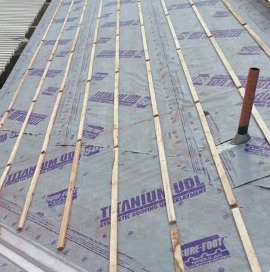

After-hours capture
Nights, weekends, mid-install — when the crew can't reach the phone, the front desk on this site answers anyway: it takes the caller's name, number and what the roof is doing, right then.
Premium Roofing Solutions for Homes and Businesses. Built for Arizona's Climate. Backed by Integrity.
Fast. Free. No Obligation.
The pattern in Galan's own reviews and listings is missed calls and slow follow-up. A Phoenix homeowner with water coming through the ceiling makes one call. If it rings out, she doesn't leave a message — she books the next roofer on the list.
Nights, weekends, mid-install — when the crew can't reach the phone, the front desk on this site answers anyway: it takes the caller's name, number and what the roof is doing, right then.
The second a call is missed, the caller gets a text back — "Sorry we missed you. Reply here and we'll get your inspection booked." — so the lead never sits silent while a competitor answers.
Every captured call lands in one pipeline as a booked inspection — not a voicemail nobody hears until Monday.
Demonstration: this is the front-desk system Blair Digital Studios installs for Galan Roofing. The demo on this page is a guided preview — the live version answers Galan's phone line.
From roof repairs to full replacements, we provide durable roofing services designed for Arizona's unique climate. Residential or commercial, start with an inspection.
View All Services →
Protect your home with expert installation and repairs.
Learn More →
Reliable roofing for businesses and multi-family properties.
Learn More →
Fast, reliable repairs to help stop leaks and limit damage.
Learn More →
Replacement systems designed for Arizona conditions.
Learn More →
Early assessments that can help prevent costly surprises.
Learn More →
Durable tile roofing for Arizona homes.
Learn More →Explore roofing work documented in Galan Roofing’s photo gallery—from tear-off and roof decking through underlayment, tile installation and completed roofs.
View All Projects →Map out your project scope before speaking with a roofing professional.
Plan Your Project →“We are very pleased with the finished project.”
★★★★★Gerald C. · Verified HomeAdvisor review, April 2023Read published review ↗Costs depend on size, roof design, condition and materials — which is why Galan quotes from an on-roof inspection, never from a website. Use the project planner to map your scope first.
Timelines depend on weather, permitting, materials and roof complexity. Galan can provide a project-specific schedule after inspection.
Ask Galan directly about current payment options; financing has not been independently confirmed.
Galan's website describes the company as licensed and insured. Verify current license status with Arizona's Registrar of Contractors.
Galan Roofing describes a four-part customer journey on its existing website. Specific timelines, availability and scope are confirmed directly with the company.
Describe your property and why you are contacting the roofing team.
Discuss roof findings, material quantities and approaches suited to the project.
Confirm what materials are required, delivery logistics and access arrangements.
Review the agreed installation or repair scope, schedule and final walkthrough.
Get a free, no-obligation estimate from Phoenix-area roofing professionals.